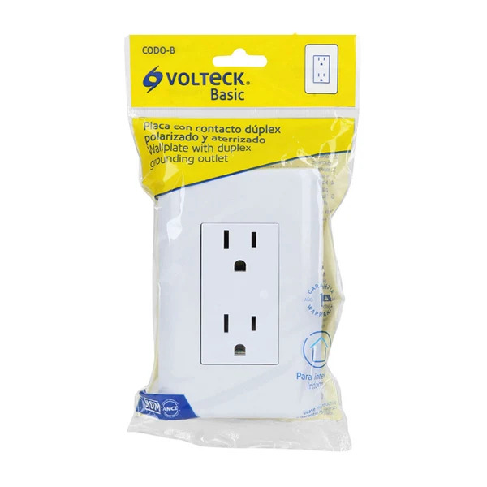

Tomacorriente doble

Punto de conexión que permite alimentar equipos eléctricos mediante enchufes compatibles. Su capacidad, puesta a tierra y tipo de montaje deben corresponder a los requisitos de la instalación.